Diagnostics, classification and uncertainty
Source:vignettes/diagnostics-and-uncertainty.Rmd
diagnostics-and-uncertainty.RmdRegression diagnostics
residual_diagnostics_plot() assembles the classic panel;
influence_plot() and qq_plot() zoom in on
particular checks. We fit a linear model to the crop-yield trial.
fit <- lm(yield ~ rainfall + fertiliser + soil_ph, data = crop_yield)
residual_diagnostics_plot(fit, title = "Crop-yield model")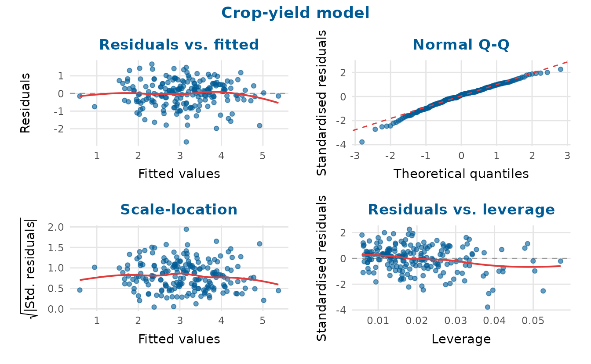
influence_plot(fit)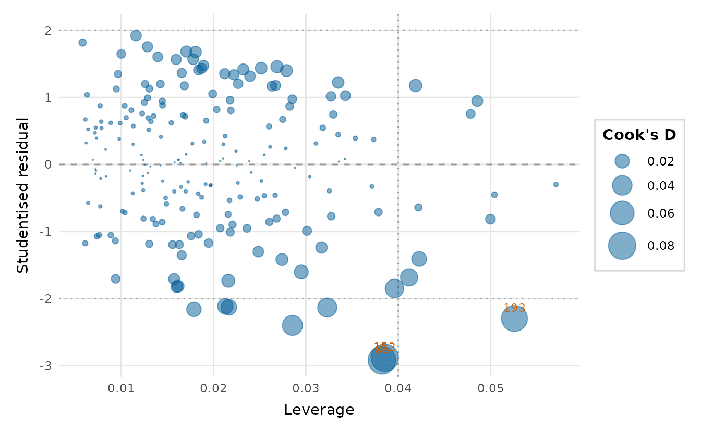
The bubble area is Cook’s distance, the standard measure of an observation’s influence on the fitted coefficients (Cook, 1977).
vif_plot() checks for multicollinearity among the
predictors. The crop-yield predictors are close to orthogonal, so to see
the diagnostic do its job we add a soil-moisture measure that is largely
driven by rainfall.
set.seed(1)
collinear <- crop_yield
collinear$soil_moisture <- 0.05 * collinear$rainfall +
rnorm(nrow(collinear), sd = 2)
vif_plot(lm(yield ~ rainfall + soil_moisture + fertiliser, data = collinear))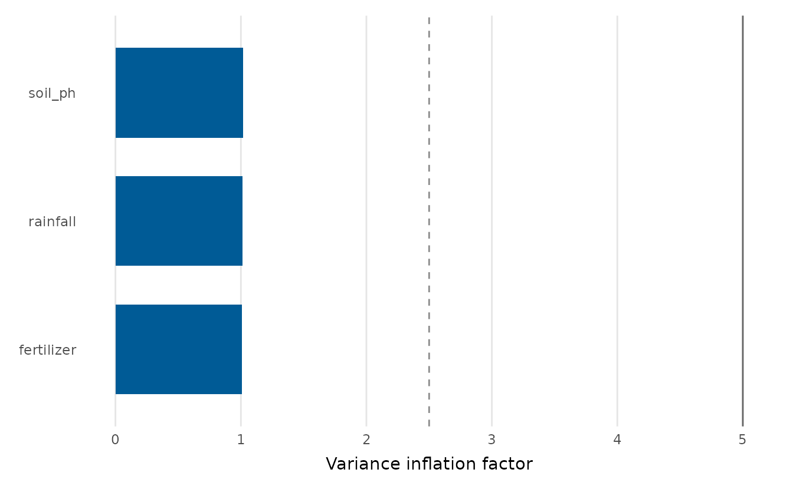
Rainfall and soil moisture each carry a variance inflation factor near 6, above the rule-of-thumb line at 5, while fertiliser stays at 1.
Diagnostics for a generalised linear model
For a binary glm the raw residuals take only a few
values, so a plain residual-versus-fitted plot is hard to read.
binned_residual_plot() instead splits the data into
equal-count bins of fitted values and plots the mean residual per bin
against a +/- 2 standard-error band (Gelman & Hill, 2007): most points
should sit inside the band, scattered around zero.
We model the rare adverse-event outcome from the clinical trial (about a 10% base rate) on the baseline biomarker, age and treatment arm.
gfit <- glm(adverse_event ~ biomarker + age + arm,
data = clinical_trial, family = binomial)
binned_residual_plot(gfit, title = "Binned residuals: adverse-event model")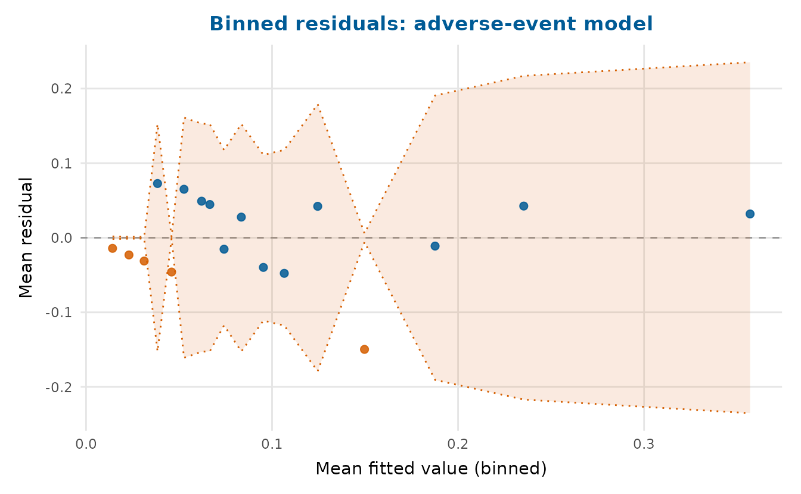
residual_diagnostics_plot() recognises a
glm and switches to GLM-appropriate panels (binned
residuals and a Q-Q plot of randomised quantile residuals, which are
standard-normal under a correct model regardless of the response
distribution):
residual_diagnostics_plot(gfit, title = "Adverse-event model")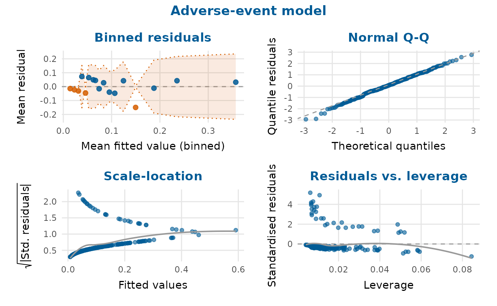
Classification on a genuinely imbalanced outcome
The adverse-event outcome is imbalanced, which is exactly when the
precision-recall, gains and lift charts earn their keep. depictr’s
classification plots each read a binomial glm directly, a
pair of vectors or, to compare several models, a named list of
models.
The ROC curve reports the AUC. Passing youden = TRUE
marks the Youden’s J operating point (the threshold maximising
sensitivity + specificity - 1):
roc_curve_plot(gfit, youden = TRUE)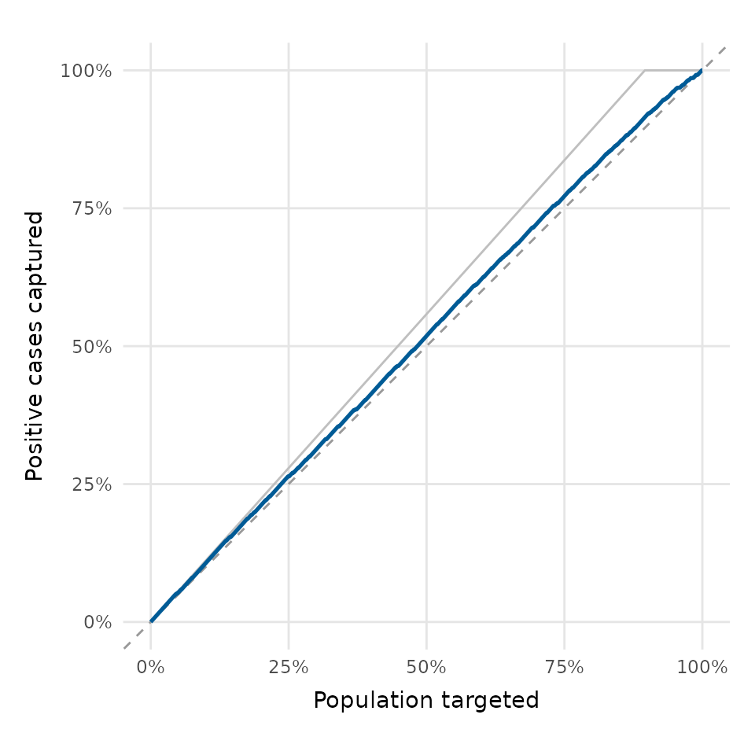
When the positive class is rare the precision-recall curve is more
informative than the ROC curve, because it ignores the many true
negatives. The baseline is the positive prevalence;
f1 = TRUE marks the maximum-F1 operating point:
pr_curve_plot(gfit, f1 = TRUE)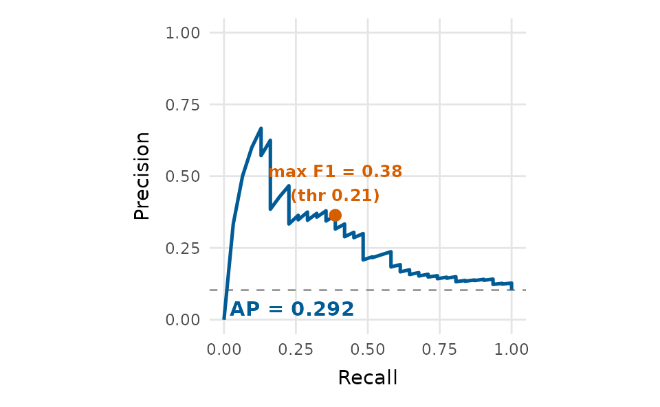
Comparing two models in one figure
A named list overlays one colour-coded curve per model, with a per-curve AUC (or average precision) in the legend. Here the full model is compared with a biomarker-only model.
reduced <- glm(adverse_event ~ biomarker, data = clinical_trial,
family = binomial)
models <- list(Full = gfit, `Biomarker only` = reduced)Because an ROC curve hugs the top-left, the bottom-right corner is
always free, so legend_inside = TRUE tucks the per-model
legend there and reclaims the right-hand margin:
roc_curve_plot(models, youden = TRUE, legend_inside = TRUE)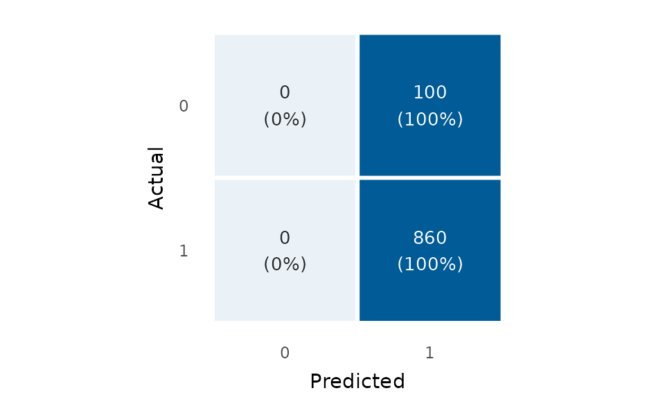
pr_curve_plot(models, f1 = TRUE)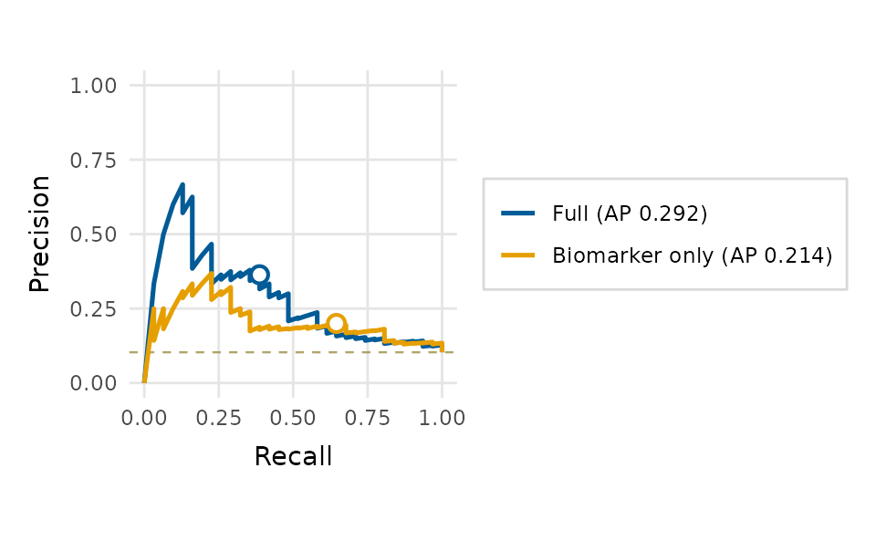
For ranking and targeting tasks, the cumulative gains and lift charts show how many positive cases are captured as more of the score-ordered population is targeted, again overlaying both models:
gain_plot(models, legend_inside = TRUE)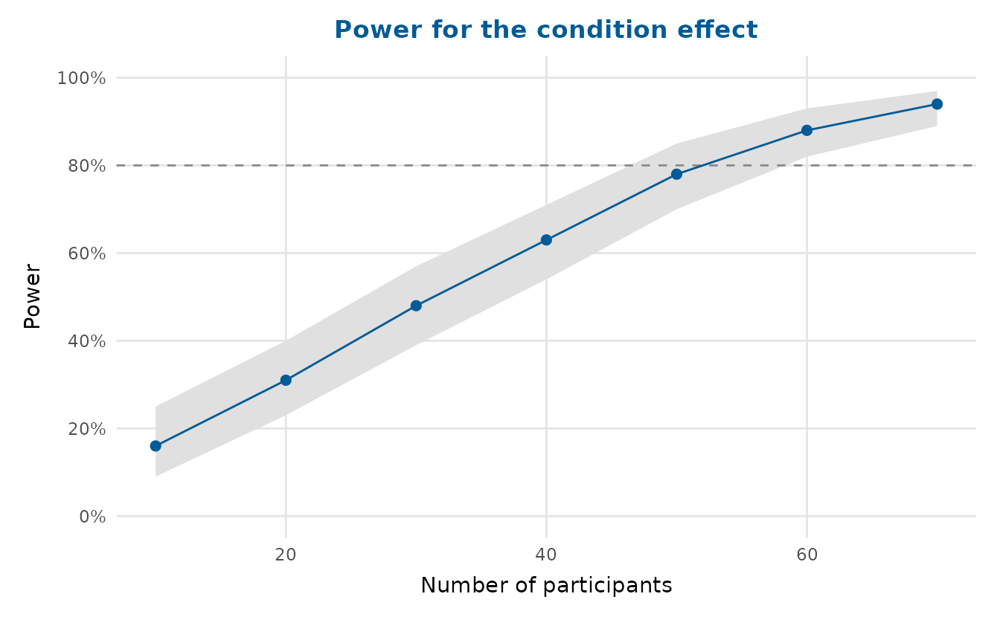
lift_plot(models, legend_inside = TRUE)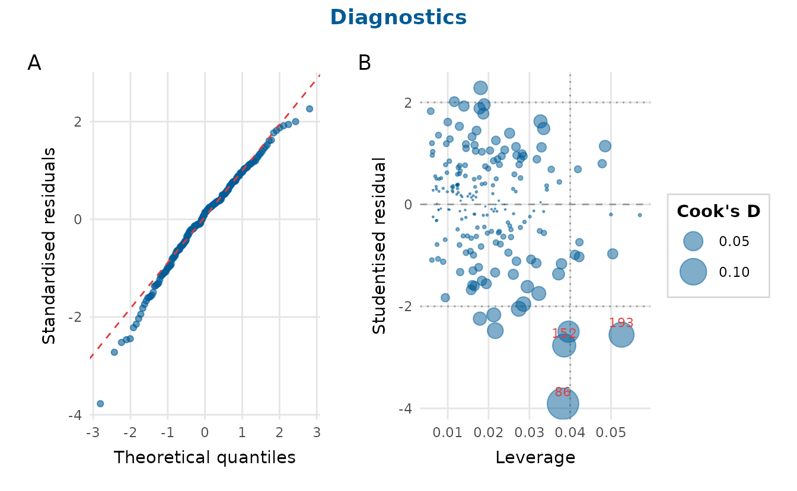
Choosing an operating point
threshold_plot() sweeps the decision threshold across
the full range of scores and plots each metric as it trades off, marking
the Youden and maximum-F1 optimal thresholds with dashed lines. It is
the natural companion to the ROC and PR curves for actually
choosing a cut-off.
tp <- threshold_plot(gfit, title = "Metrics across the decision threshold")
tp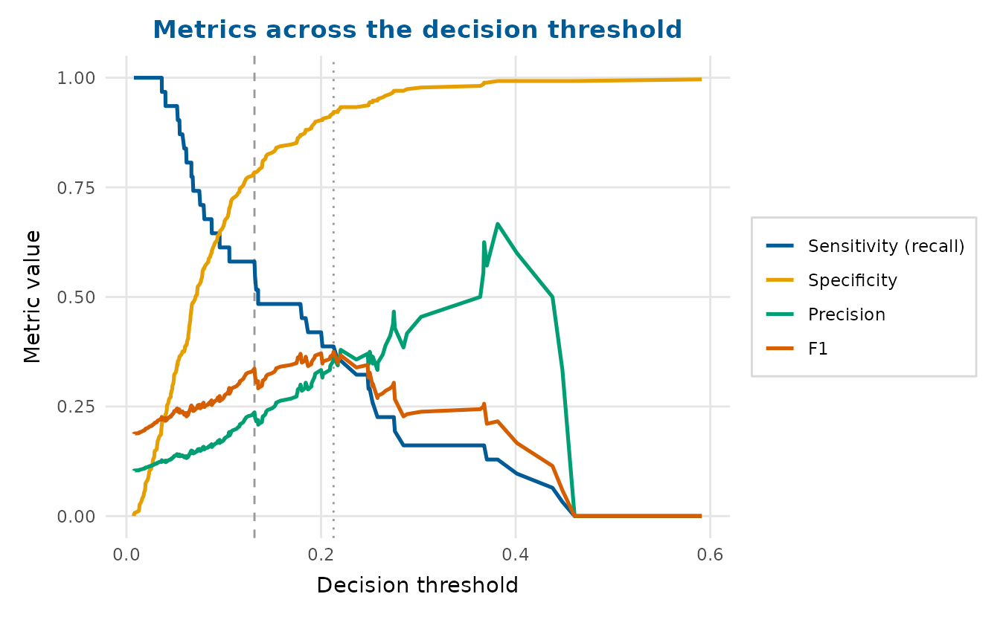
attr(tp, "thresholds") # the Youden and max-F1 thresholds
#> youden f1
#> 0.1315540 0.2128417Calibration
calibration_plot() checks whether predicted
probabilities match observed frequencies. Each bin’s observed rate
carries a Wilson binomial confidence interval, so bins backed by few
observations (common in the sparse upper tail when the outcome is rare)
are not over-interpreted.
calibration_plot(gfit, bins = 6)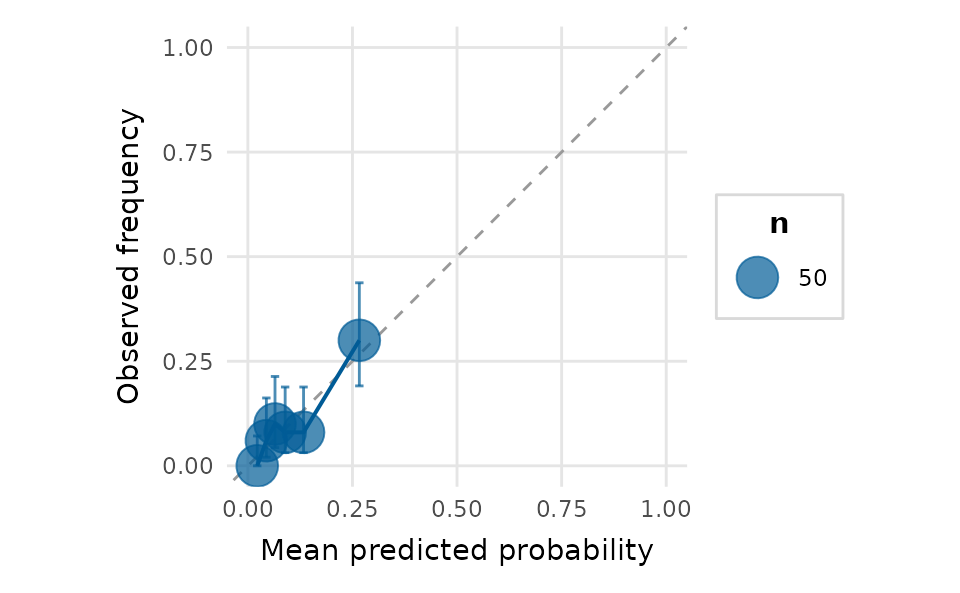
A confusion-matrix heatmap completes the picture. Passing
threshold = "youden" reuses the same operating point the
ROC curve marks, so the two agree:
confusion_matrix_plot(gfit, threshold = "youden", normalise = "row")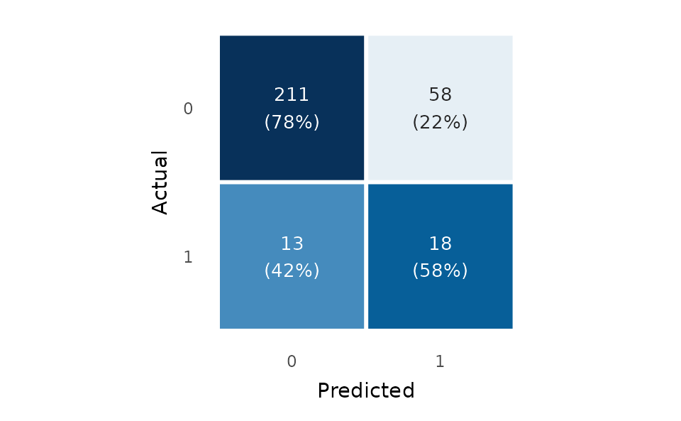
Uncertainty
posterior_plot() summarises draws (posterior, bootstrap,
simulation) as a distribution per parameter. Here are the real posterior
draws from a Bayesian fit of the lexical-decision model, shown as
point-and-interval forests.
draws <- readRDS(system.file("extdata", "lexdec_draws.rds", package = "depictr"))
posterior_plot(draws[c("conditionunrelated", "modalityauditory",
"word_frequency")],
labels = c(conditionunrelated = "condition",
modalityauditory = "modality",
word_frequency = "word frequency"),
style = "interval", title = "Posterior estimates (ms)")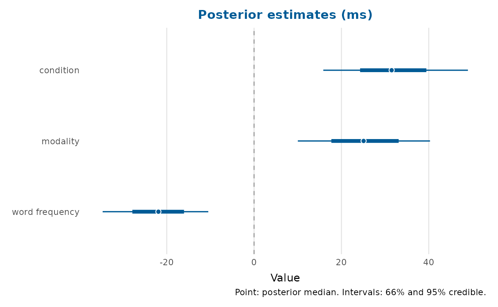
Power curves
power_curve_plot() reads a
simr::powerCurve() object or a tidy data frame, so a slow
power simulation does not have to be re-run to redraw it. The package
ships a real powerCurve object from a simr
analysis of the lexical-decision design, which simulated power for the
word-frequency slope as the number of participants grows. We read it
straight from disk.
pc <- readRDS(system.file("extdata", "powercurve_lexdec.rds", package = "depictr"))
power_curve_plot(pc, x_lab = "Number of participants",
title = "Power for the word-frequency effect")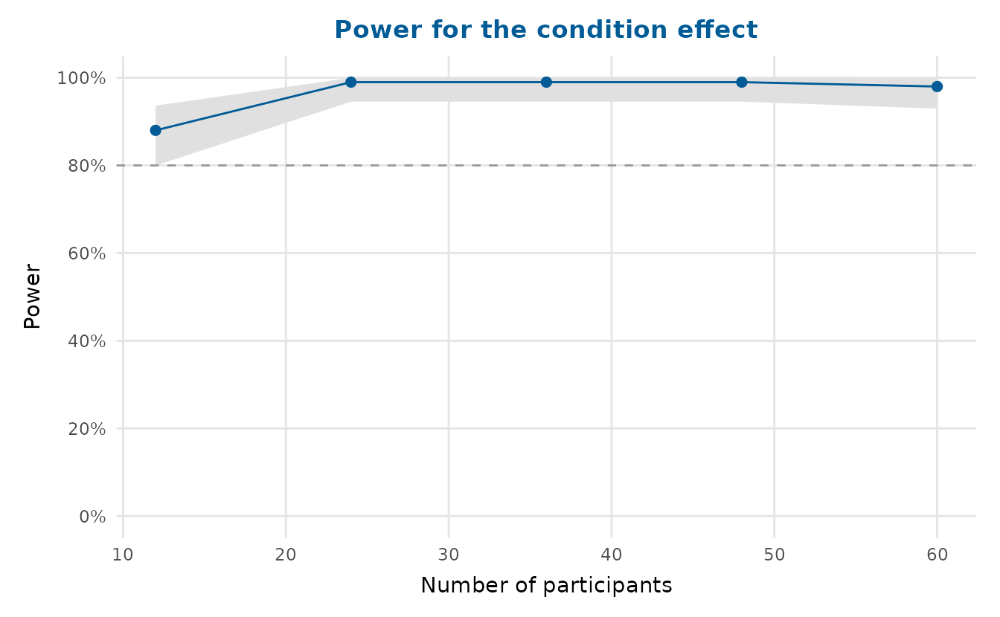
The analysis ran 100 simulations at each of 12, 24, 36, 48 and 60 participants. Power for the word-frequency slope is 88% with 12 participants and 99% with 24, and it stays there for the larger samples. The confidence band is widest at the smallest sample size, where its lower limit falls on the 80% target line, so 24 participants is the first design the simulation clears comfortably.
Composing and saving
Combine any of these with arrange_plots() and save with
save_plot():
panel <- arrange_plots(
qq_plot(fit), influence_plot(fit),
ncol = 2, title = "Diagnostics", tag_levels = "A"
)
panel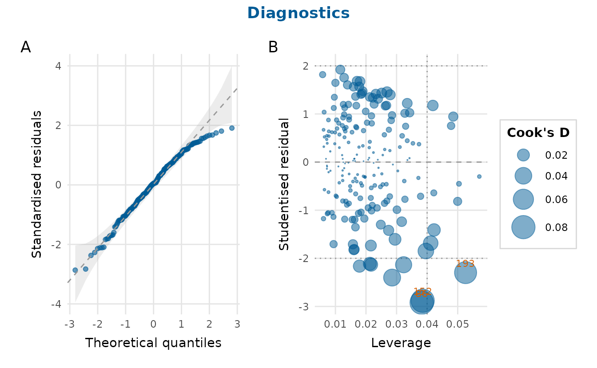
save_plot() writes it out at a print-ready 300 dpi by
default, creating any missing directories along the way.
save_plot("figures/diagnostics.png", panel, width = 7, height = 3.2, dpi = 300)